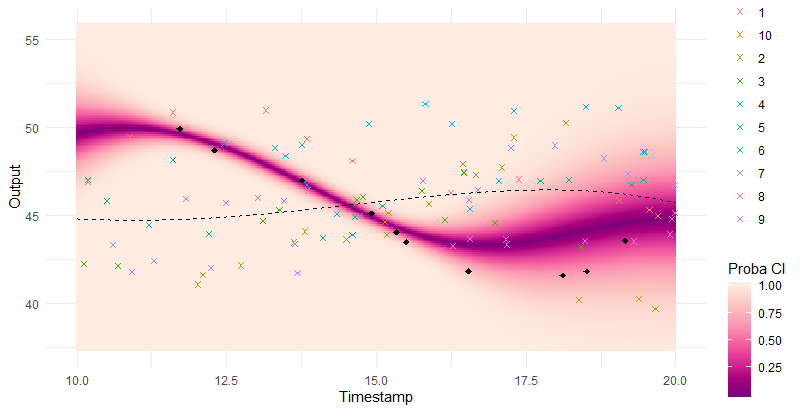

Apprentissage de données fonctionnelles par modèles multi-tâches :
Application à la prédiction de performances sportives
Arthur LEROY (MAP5 - Université de Paris)
Servane GEY (MAP5 - Université de Paris)
Pierre LATOUCHE (MAP5 - Université de Paris)
Benjamin GUEDJ (INRIA - UCL)
Groupe de travail en Statistique du LMRS - Rouen - 22/10/2020
Illustration: GP regression

Illustration: MAGMA

Illustration: MAGMAclust

Illustration: MAGMAclust

Estimation of the mean processes

And what about the swimmers ?
|
|
Simu
|
Simu
|
Real data
|
Real data
|
|
|
MSE
|
\(CI_{95}\)
|
MSE
|
\(CI_{95}\)
|
|
GP
|
87.5 (151.9)
|
74.0 (32.7)
|
25.3 (97.6)
|
72.7 (37.1)
|
|
GPFDA
|
31.8 (49.4)
|
90.4 (18.1)
|
|
|
|
MAGMA
|
18.7 (31.4)
|
93.8 (13.5)
|
3.8 (10.3)
|
95.3 (15.9)
|
Did I mention that I like GIFs ?

Why probabilistic predictions matter ?
Making a prediction is \(\mathbb{P}(\)saying something wrong\() \simeq 1\).
A probabilistic prediction tells you how much:

Perspectives
Enable association with sparse GP approximations
Extend to multivariate functional regression
Work on an online version
Develop a more sophisticated model selection tool
Integrate to the app and launch tests with FFN
Listen to other good ideas you are about to give me
References
Pattern Recognition and Machine Learning - Bishop - 2006
Gaussian processes for machine learning - Rasmussen & Williams - 2006
Curve prediction and clustering with mixtures of Gaussian process [...] - Shi & Wang - 2008
Gaussian Process Regression Analysis for Functional Data - Shi & Choi - 2011
Career Performance Trajectories in Track and Field Jumping Events [...] - Boccia & al - 2017
Efficient Bayesian hierarchical functional data analysis [...] - Yang & al - 2017
Excelling at youth level in competitive track and field [...] - Kearney & Hayes - 2018
Functional Data Analysis in Sport Science: Example of Swimmers' [...] - Leroy & al. - 2018
MAGMA: Inference and Prediction with Multi-Task Gaussian Processes - Leroy & al. - preprint Cluster-Specific Predictions with Multi-Task Gaussian Processes - Leroy & al. - preprint
A cat GIF is priceless